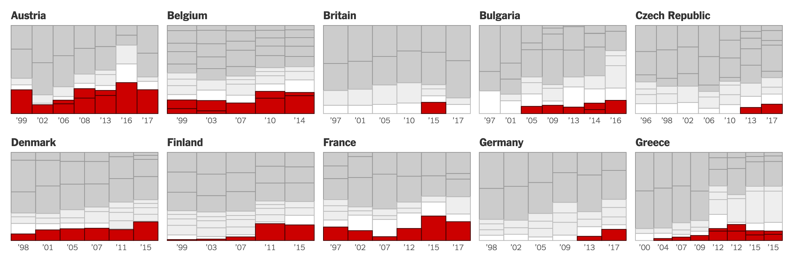
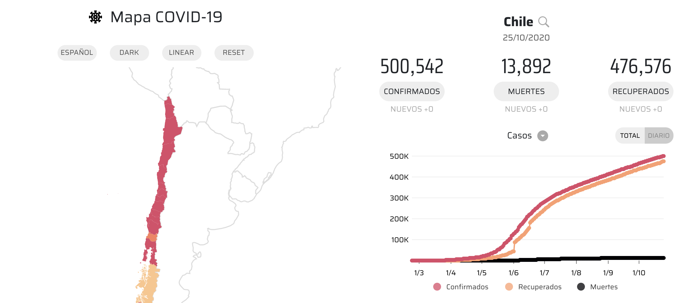
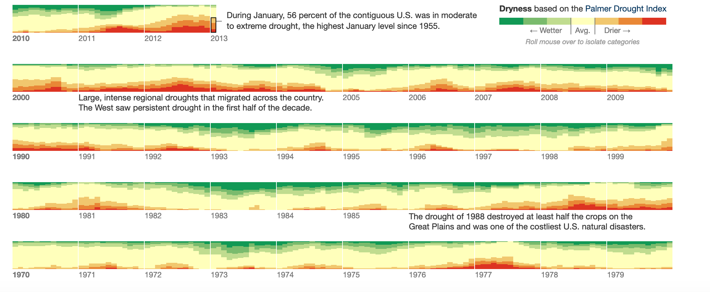
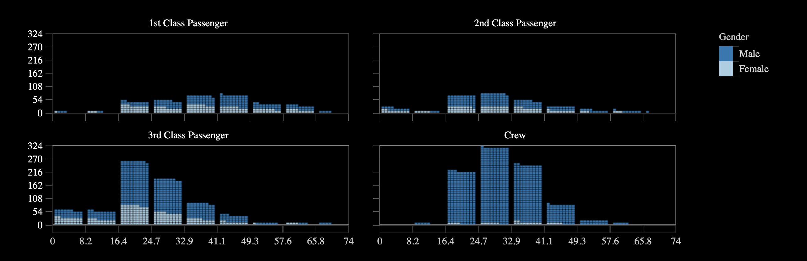

¡Hola 👋! Espera mientras comienza la sesión.
Antes que todo, ¿cómo están?
Visualización de Información
IIC2026 2020-2
Facet
Visualización de Información
IIC2026 2020-2
Repaso
Repaso
1. Facet
2. Yuxtaposición y coodinación de vistas
3. Partición en vistas
4. Superposición de capas
Codificación visual y de interacción
- Definir el cómo.
- Idiom: enfoque distintivo de codificar información o manipularla.
- Hay decisiones visuales y decisiones de interacción.
Estrategias de manejar complejidad de un dataset
Derivación de datos
Manipulación de vista
Facet de vistas
Reducción de datos
Facet
Yuxtaposición y coodinación de vistas
Partición en vistas
Superposición de capas
Yuxtaposición de vistas

(Fuente: A Tour Through the Visualization Zoo )
Yuxtaposición de vistas

(Fuente: How Far Is Europe Swinging to the Right? - NYTimes )
¡Visualización del día!
Propuesto por Gatito (?).
(Fuente: Mapa COVID-19 )
Combinaciones en yuxtaposición de vistas
Combinaciones en yuxtaposición de vistas
Si la codificación NO se comparte entre vistas:
- Si se comparten los datos: Vistas multiforma
- Si se comparte un subconjunto de datos: Vistas panoramica/detalle y multiforma
- Si no se comparten datos: 🤔
Combinaciones en yuxtaposición de vistas
Si la codificación NO se comparte entre vistas:
- Si se comparten los datos: Vistas multiforma
- Si se comparte un subconjunto de datos: Vistas panoramica/detalle y multiforma
- Si no se comparten datos: 🤔
Si la codificación se comparte entre vistas:
- Si se comparten los datos: 🤔
- Si se comparte un subconjunto de datos: Vistas panoramica/detalle
- Si no se comparten datos: Multiples pequeños
Partición en vistas
(Fuente: Drought and Deluge in the Lower 48 - NYTimes )
Partición en vistas
(Fuente: Sandance )
Superposición de capas

(Fuente: Strikeouts on the rise - NYTimes )
¿Más dudas?
Próximos eventos:
Hoy se publica Entrega 3.
Próximos eventos:
Hoy se publica Entrega 3.
Próximo jueves (5 de noviembre) se publica Hito 3.
Próximos eventos:
Hoy se publica Entrega 3.
Próximo jueves (5 de noviembre) se publica Hito 3.
Correcciones de Hito 2 están en proceso.
Próximos eventos:
Hoy se publica Entrega 3.
Próximo jueves (5 de noviembre) se publica Hito 3.
Correcciones de Hito 2 están en proceso.
Se vienen sesiones sobre: Reducción de datos (martes 3) y Brushing, agregación y vistas en D3.js (jueves 5) .